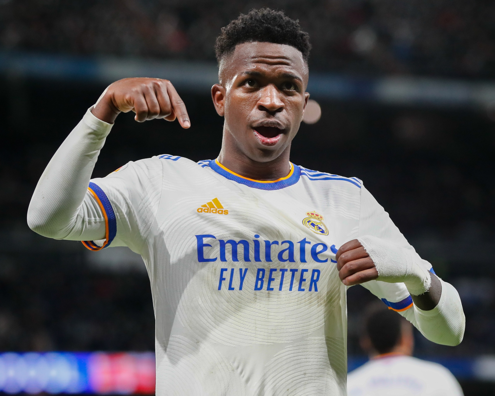
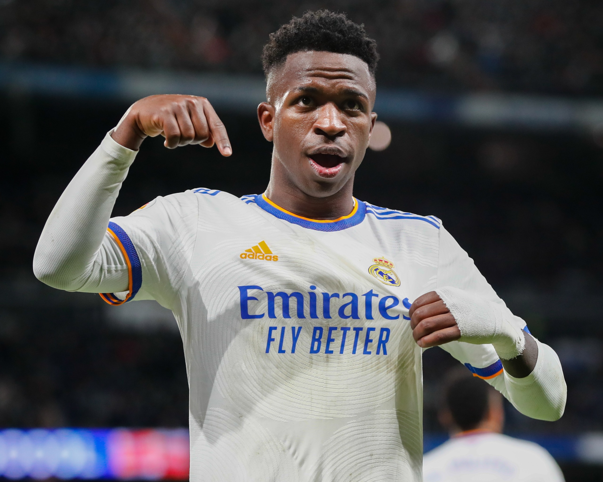
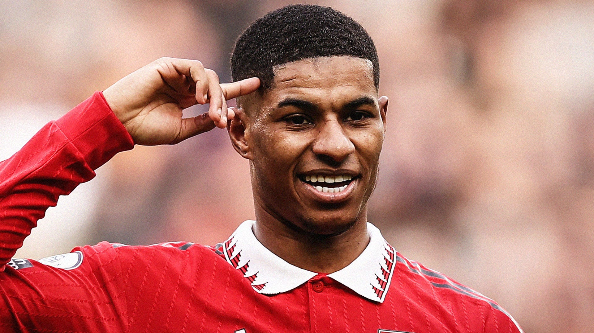
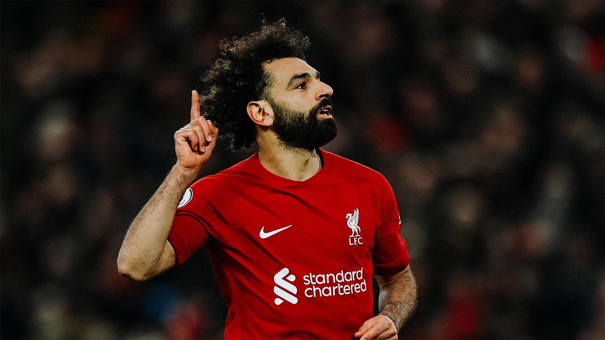
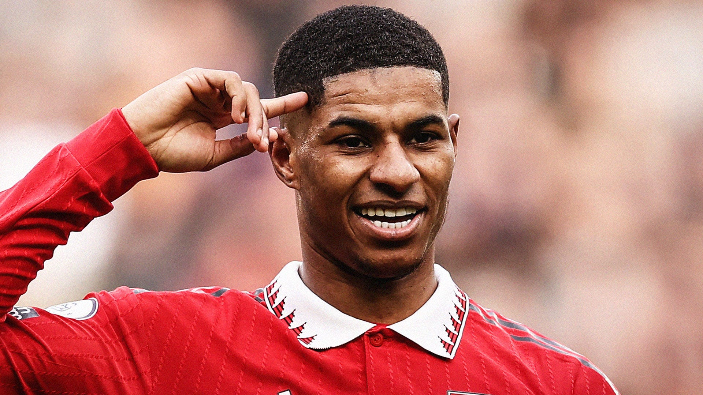
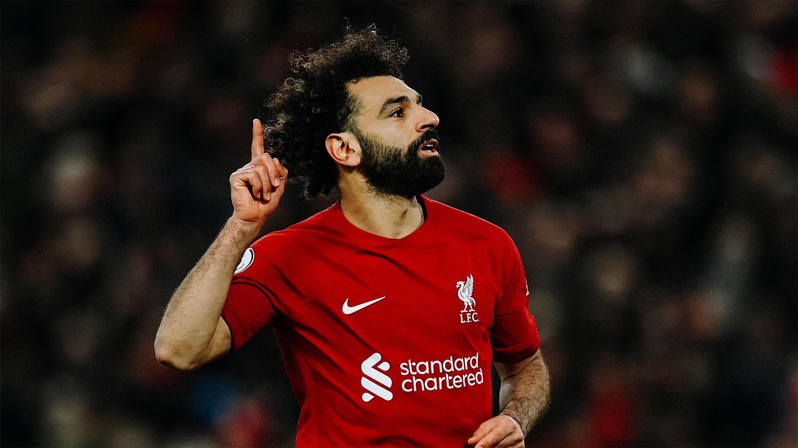

Best players
I wanted to talk about my opinions on the top 10 players in the world. Each of these players a role models for millions maybe even billions of people around the world. They entertain us day in and day out and I wanted to make an appreciation page for some of the greatest of all time.
Top 10 Players:
- Ronaldo - I admire Ronaldo's tenacity and dedication to his craft. He's a tenacious forward who always gives his all on the field. He has won numerous titles with his club teams and the national team, and he has scored some of football's most memorable goals.
- Messi - Messi is a joy to watch on the field. His incredible ball control and dribbling abilities are breathtaking, and he has the ability to turn a game on its head with a single moment of magic. He has received numerous individual awards and has led his club team to numerous championships.
- Neymar - Neymar is a talented and creative forward who poses a constant threat to opposing teams. His dribbling abilities and ability to create opportunities for himself and his teammates make him a valuable asset on the field.
- Mbappe - Mbappe is a rising football star whose speed, agility, and finishing ability make him a lethal striker. He has already won numerous titles with his club team and the national team, and he has the potential to become one of the world's best players.
- Vinicius Junior - Vinicius Junior is a young and talented player with tremendous potential. His dribbling abilities and speed make him a difficult player to defend against, and he has already demonstrated the ability to score crucial goals.
- Kevin de Bruyne - De Bruyne is an extremely talented midfielder who can control the tempo of a game while also creating chances for his teammates. His passing ability and vision make him an important member of his club team as well as the national team.
- Haaland - Haaland is a powerful and skilled striker who is quickly establishing himself in the football world. His speed and finishing ability make him a dangerous player in front of goal, and he has the potential to become one of the world's best players.
- Modric - With his passing ability and work rate, Modric is a highly skilled midfielder who can control the game. He has numerous club titles and led his country to the World Cup final in 2018, where he was deservedly named the tournament's best player.
- Rashford - Rashford is a gifted and versatile midfielder who can also play as a winger. His speed and dribbling abilities make him a difficult player to defend against, and he has already demonstrated his ability to score crucial goals for both his club team and the national team.
- Salah - Salah is a highly skilled forward who can score from anywhere on the field. His speed and dribbling abilities make him a difficult player to defend against, and he has won numerous titles with his club team as well as being an important member of the national team.
If you have any disagreements, confront me like a man!
 


 


